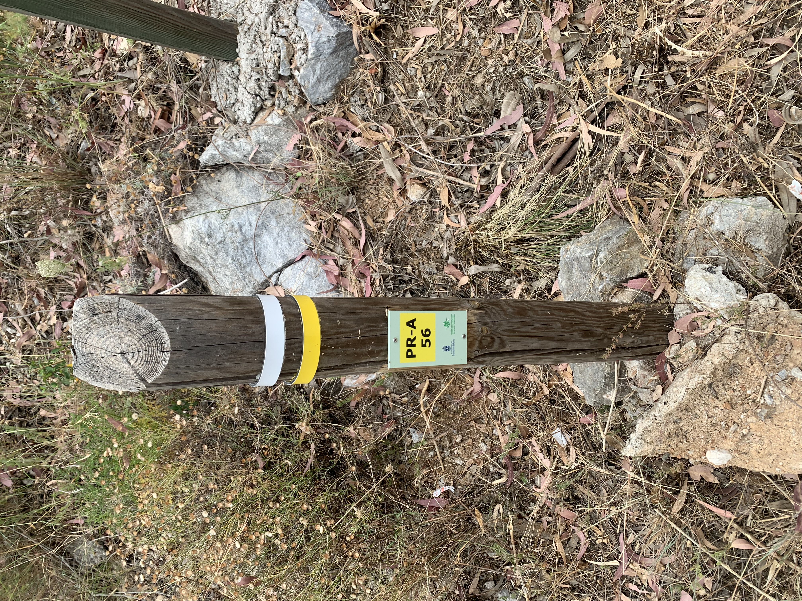
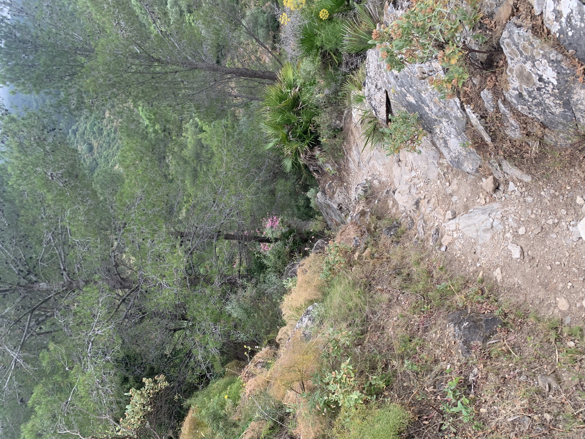
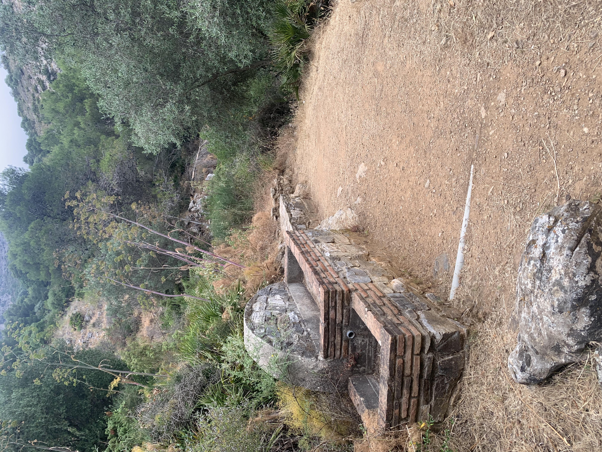
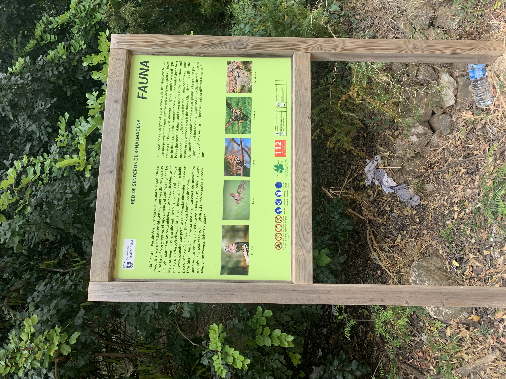

Hay deportes que se entrenan en una sala, con horario fijo y superficie controlada. Y luego está esto: subir una montaña sin saber exactamente qué terreno te vas a encontrar en el siguiente tramo, o meterte en un barranco donde el agua marca el ritmo, no tú. Son de los pocos deportes donde el entorno decide tanto como el propio cuerpo.

Senderismo: la resistencia que no se nota hasta que hace falta
El senderismo parece sencillo — al fin y al cabo, es caminar. Pero caminar durante horas sobre terreno irregular, con desnivel acumulado, cambia por completo lo que le exige al cuerpo frente a caminar en llano. Cada sendero con subidas y bajadas constantes es, en la práctica, un entrenamiento de resistencia cardiovascular disfrazado de paseo.
Lo interesante es que esa resistencia no se nota en el momento — se nota en todo lo demás: en subir escaleras sin fatigarte, en aguantar de pie más tiempo, en recuperarte antes después de otro deporte más intenso.


Barranquismo: la resistencia bajo presión real
El barranquismo añade una capa distinta: no solo hay que sostener el esfuerzo físico, hay que hacerlo con la cabeza fría en un entorno que no perdona la distracción — saltos, rápeles, agua fría, terreno resbaladizo. Aquí la resistencia física va de la mano de la resistencia mental: aguantar el esfuerzo mientras se mantiene la calma y la concentración es, literalmente, la mitad de la actividad.

Lo que aporta el aire libre, más allá del músculo
Hay algo que ningún gimnasio replica del todo: la luz natural, el cambio de terreno constante, y la sensación de estar resolviendo algo real en vez de repetir un movimiento en una máquina. Entrenar al aire libre reduce la sensación de esfuerzo percibido — el cuerpo trabaja igual o más duro, pero la cabeza lo procesa de forma distinta cuando hay paisaje de por medio en vez de una pared.
- Mejora la resistencia cardiovascular de forma progresiva, sin necesidad de series ni repeticiones.
- Entrena la toma de decisiones bajo cansancio: dónde pisar, cuándo parar, cómo dosificar el esfuerzo.
- Reduce el estrés percibido más que el mismo esfuerzo hecho en interior.



La resistencia como hilo común
Da igual el deporte: judo, Bo, catana, senderismo o barranquismo. La resistencia — física y mental — es la base que sostiene a todas. No es la parte vistosa de ningún deporte, pero es la que decide si aguantas el asalto, el sendero o el barranco cuando ya no queda técnica que dar, solo cuerpo.
Este artículo tiene fines informativos sobre práctica deportiva y actividades al aire libre.